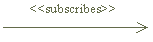
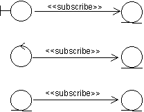
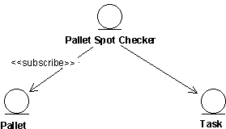
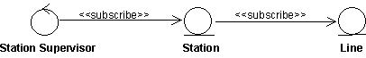

Guidelines:
Subscribe-Association
|
 |
A
subscribe-association between two classes indicates that
objects of the subscribing class will be informed when a particular event
has occurred in objects of the associated class. A subscribe-association has
a condition defining the event that causes the subscriber to be
notified. |
In some cases, an object is dependent upon a specific event occurring in
another object. If the event is taking place within a boundary or control
object, this object simply informs the other object about what has happened. But
if the event is taking place within an entity object, the situation is somewhat
different. An entity object may not be able to inform other objects about
anything if it is not specifically asked to do so.
Example
Assume that a system has been modeled with the possibility of
withdrawing money from a bank account via transferals. If an attempted
withdrawal causes a negative balance in the account, a notice must immediately
be written and sent to the customer. The account, which is modeled as an entity
object, should not be concerned with whether the customer is notified or not.
Instead, a boundary object should notify the customer.
In the example above, the boundary object would have to pose the question
"has the event I am waiting for happened?" repeatedly to the entity
object. To make the situation clearer, and to postpone the implementation
details until the design phase, there is a special association used to express
this, namely the subscribe-association.
The subscribe-association, which associates an object of any type with an
entity object, expresses that the associating object will be informed when a
particular event takes place in the entity object. We recommend that you use the
association only to associate entity objects, since it is the passive nature of
the entity objects that causes the need for the association. Interface- and
control objects, on the other hand, are both allowed to initiate communication.
Therefore, they do not need to be "subscribed to", but can perform
their responsibilities in other ways.

The subscribe-association associates an object of any
type with an entity object. The associating object will be informed when a
particular event takes place in the associated entity object.
Note that the direction of the association shows that only the subscribing
object is aware of the relation between the two objects. The description of the
subscription is entirely within the subscribing object. The associated entity
object, in turn, is defined in the usual way without considering that other
objects might be interested in its activity. This also implies that a
subscribing object can be added to, or removed from, the model without changing
the object it subscribes to.
The subscribe-association is assigned a multiplicity that indicates how many
instances of the targeted object the associating object can associate
simultaneously. Then one or more conditions are described on the association,
which indicate what must occur in order for the associating object to be
informed. The event might be a change in an association’s or attribute’s
value, or (some part of) the evaluation of an operation. When the event takes
place, the subscribing object will be informed that something has happened. Note
that no information concerning any result of the event is transmitted, only the
fact that the event has happened. If the associating object is interested in the
resulting state of the entity object after the event, it will have to interact
with the entity object in the ordinary way. This means that it will need a link
to it as well.
Example
In the Depot-Handling System, spot checks must be made on
pallets, to gauge their life expectancy. Therefore, upon every hundredth move of
a pallet from one place in the depot to another, the pallet is checked at a
special testing station. This is modeled by a subscribe-association from the
control class Pallet Spot Checker to the entity class Pallet. Each instance of
Pallet counts the number of times it is moved, using a counter attribute. When
it has been moved a hundred times the Pallet Spot Checker is informed due to the
condition of the subscribe-association. The Pallet Spot Checker then creates a
special Task, which transports the pallet to the testing station. The Pallet
Spot Checker does not need any link to Pallet, but must have one to Task in
order to initiate it.

After a pallet have been moved a hundred times, the
Pallet Spot Checker creates a new Task.
The conditions of the subscribe-association should be expressed in terms of
abstract characteristics, rather than in terms of its specific attributes or
operations. In this way, the associating object is kept independent of the
contents of the associated entity object, which may well change.
The subscribe-association does not always associate two object instances. It
is also valid from a class to an instance, a meta relation. This is described in
subsections below. There are also cases where the class of an object is
associated by a subscribe-association, for example if the particular event
happens to be the instantiation of the class.
Sometimes, it is necessary for a boundary object to be informed if an event
takes place in an entity object. This calls for a subscribe-association.
Example
Consider a withdrawal from a bank account by means of
transferals. Here, it is the control object Transferal Handler that performs
operations on the entity object Account. If the balance of Account turns
negative, the customer will be sent a notice prepared by the boundary object
Notice Writer. This object has, therefore, a subscribe-association to
Account. The stated condition is that the balance goes below zero. As soon as
that event takes place, Notice Writer is informed. This particular subscribe-association
is an instance association, inasmuch as an instance of Notice Writer is
constantly on the look-out for overdrafts in instances of Account.
If the customer is not to receive any more information than that his balance
is low, then this is sufficient. But if he should also be told how low,
then Notice Writer must perform an operation on Account to learn the exact
amount. To do this, Notice Writer must have a link to Account.

The boundary class Notice Writer subscribe to the event
of the balance falling below a certain level in the entity object Account. If
Notice Writer also needs to know the exact sum of the deficit, it must have a
link to Account.
An example of a meta-association from a boundary class is when an event in an
entity object causes a new window to be presented to the user. Then an
interface-object class subscribes to instances of the entity object.
Example
In a system handling a network there are stations that
function as nodes in the network, and there are lines interconnecting them. Each
station is connected to other stations via a number of lines. The capacity of a
station is determined by how many of its lines are functioning. If over 80% of
them are functioning the capacity of the station is high, if less than 20 % are
functioning it is low, and anything in between is medium. In our model of the
system, we have two entity objects, Station and Line, where Station has a subscribe-association
to Line. The condition of the association is that Station should be
informed when the status of Line, which may be enabled or disabled, is changed.
Furthermore, a control object that subscribes to Station will
be informed if the capacity of the station becomes low. This is described below,
where this example is continued.

A Station instance is informed as soon as the status of
one of its instances of Line is changed.
A subscribe-association between entity classes is almost
always an instance association, since what is involved, usually, is
already-existing instances. However, there may be cases where an instance of the
subscribing entity object is created when the specified event takes place in the
associated entity object. In such cases, the association goes from a class to an
instance, i.e., it is a meta association. One can also imagine that an instance
of a particular entity object would like to know when a new instance of another
entity object is created.
Example
In the example above, the entity object Station has a subscribe-association
to the entity object Line. Thus, Station will be informed each time the
status of a Line instance is changed. Such a change of status will change the
capacity of the Station. If the capacity becomes low, i.e., less than 20% of its
lines are functioning, the system must find suitable new ways through the
network so that this station is avoided. This, of course, is no task for
Station, but must be performed by the control object Station Supervisor, which
has a subscribe-association to each instance of Station.

The control object Station Supervisor subscribes to the
entity object Station, which in turn subscribes to the entity object Line.
Most often, a subscribe-association from a control object
will be from a class to an instance, or vice versa, i.e., a meta association.
Usually, the instance of the control object that will deal with the event in the
entity object is not created until the event actually takes place. But one can
also imagine, for example, that an instance of a control object would like to
know when a new instance of a certain entity object is created. Thus, in some
few cases the subscribe-association may be an instance
association.
Example
In the example above, the subscribe-association
from Station Supervisor to Station has the characteristics of a meta
association, i.e., it is the class Station Supervisor that is informed when the
capacity of the Station has run low. When Station Supervisor receives this
message, it creates an instance which deals with the event.
Copyright
© 1987 - 2001 Rational Software Corporation
|  Artifacts >
Artifacts >
 Analysis & Design Artifact Set >
Analysis & Design Artifact Set >
 Design Model... >
Design Model... >
 Design Model >
Design Model >
 Guidelines >
Guidelines >